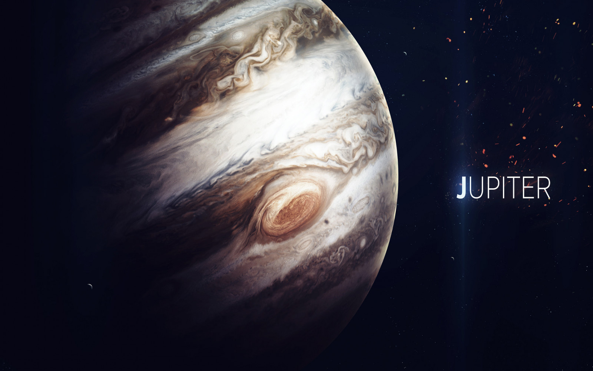
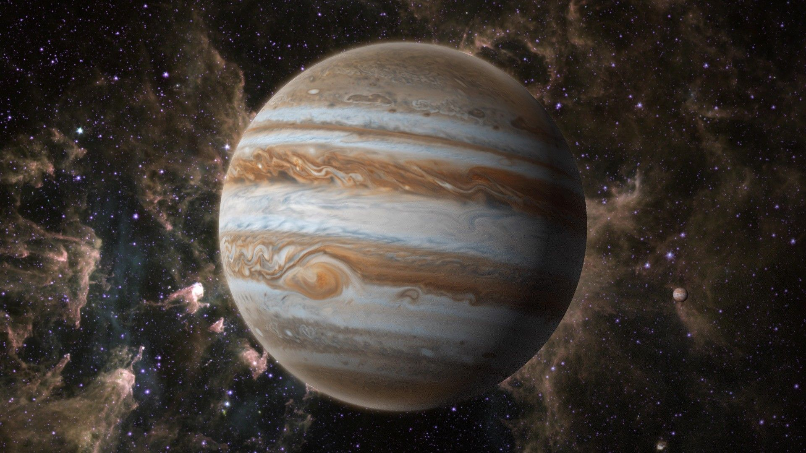

Júpiter
Júpiter é o maior planeta do Sistema Solar, tanto em diâmetro quanto em massa, e é o quinto mais próximo do Sol. Possui menos de um milésimo da massa solar, contudo tem 2,5 vezes a massa de todos os outros planetas em conjunto. É um planeta gasoso, junto com Saturno, Urano e Netuno. Estes quatro planetas são por vezes chamados de planetas jupiterianos ou planetas jovianos, e são os quatro gigantes gasosos, isto é, que não são compostos primariamente de matéria sólida. Júpiter é composto principalmente de hidrogênio, sendo um quarto de sua massa composta de hélio, embora o hélio corresponda a apenas um décimo do número total de moléculas. O planeta também pode possuir um núcleo rochoso composto por elementos mais pesados, embora, como os outros planetas gigantes, não possua uma superfície sólida bem definida. Por causa de sua rotação rápida, de cerca de dez horas, ele possui o formato de uma esfera oblata (ele possui uma suave, mas perceptível, saliência em torno do equador). Sua atmosfera externa é visivelmente dividida em diversas faixas, em várias latitudes, resultando em turbulência e tempestades nas regiões onde as faixas se encontram. Uma dessas tempestades é a Grande Mancha Vermelha, uma das características visíveis de Júpiter mais conhecidas e proeminentes, cuja existência data pelo menos do século XVII, quando foi pela primeira vez avistada com telescópio, com ventos de até 650 km/h e um diâmetro transversal duas vezes maior do que a Terra.
Júpiter é observável da Terra a olho nu, com uma magnitude aparente máxima de -2,94, sendo no geral o quarto objeto mais brilhante no céu, depois do Sol, da Lua e de Vênus, embora, por vezes, Marte também fique mais brilhante do que Júpiter. O planeta era conhecido por astrônomos de tempos antigos e era associado com as crenças mitológicas e religiosas de várias culturas. Os romanos nomearam o planeta de Júpiter, um deus de sua mitologia. Júpiter possui um tênue sistema de anéis e uma poderosa magnetosfera. Possui pelo menos 79 satélites, dos quais se destacam os quatro descobertos por Galileu Galilei em 1610: Ganimedes, o maior do Sistema Solar, Calisto, Io e Europa; os três primeiros são mais massivos que a Lua, sendo que Ganimedes possui um diâmetro maior que o do planeta Mercúrio. Várias sondas espaciais visitaram Júpiter, todas elas de origem estadunidense. A Pioneer 10 passou por Júpiter em dezembro de 1973, seguida pela Pioneer 11, cerca de um ano depois. A Voyager 1 passou em março de 1979, seguida pela Voyager 2 em julho do mesmo ano.[22] A sonda espacial Galileu entrou na órbita de Júpiter em 1995, enviando uma sonda através da atmosfera no mesmo ano e conduzindo múltiplas aproximações com os satélites galileanos até 2003. A sonda Galileu também presenciou o impacto do cometa Shoemaker-Levy 9 em Júpiter em 1994, possibilitando a observação direta deste evento. Outras missões incluem as sondas Ulysses, Cassini-Huygens e New Horizons, que utilizaram o planeta para aumentar sua velocidade e ajustar a sua direção aos seus respectivos objetivos. A última sonda a visitar o planeta foi Juno, que entrou em órbita em 4 de julho de 2016. Um futuro alvo de exploração é Europa, satélite que provavelmente possui um oceano líquido coberto de gelo.